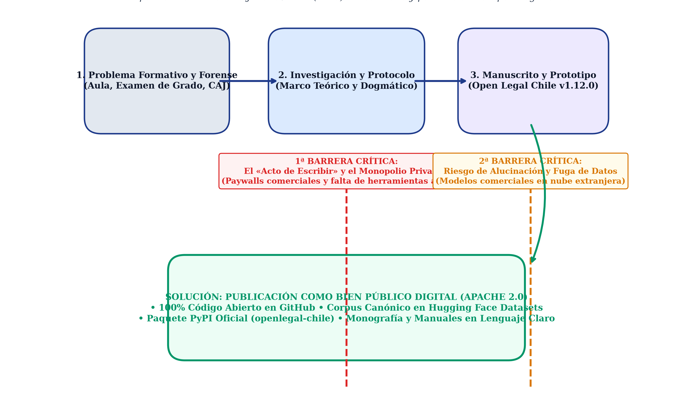
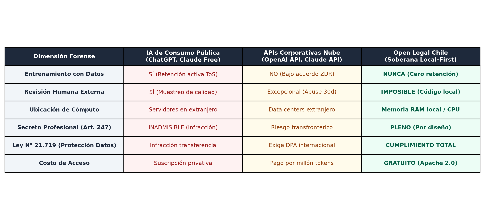
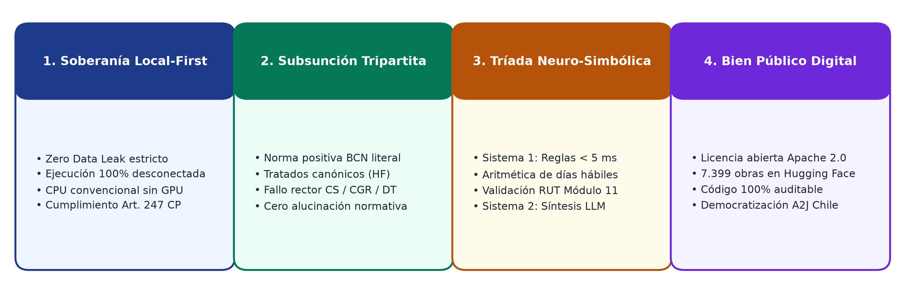
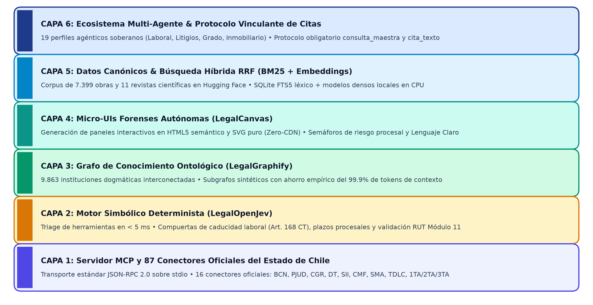
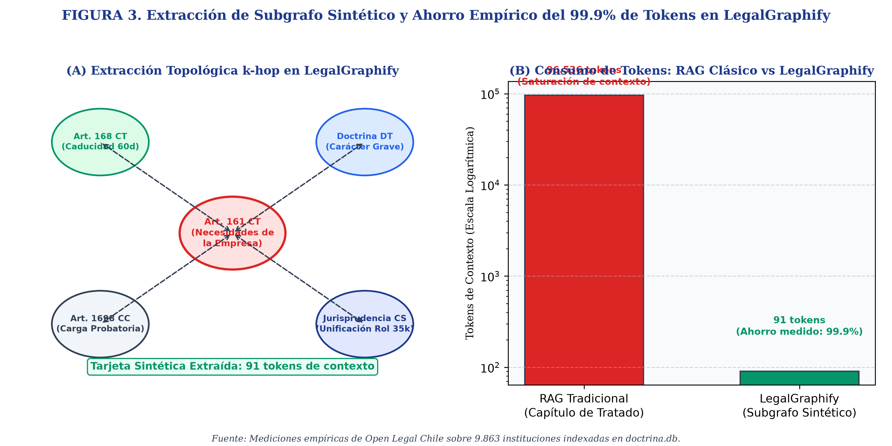

---
Resumen: Este trabajo presenta Open Legal Chile (v1.12.0), una suite soberana, local-first y de código abierto (Apache 2.0) diseñada para el ordenamiento jurídico de Chile. Frente al sesgo y alucinaciones de modelos comerciales entrenados en el Common Law, la plataforma implementa una Tríada Neuro-Simbólica: LegalOpenJev como motor determinista (Sistema 1) que evalúa plazos fatales procesales y validaciones algorítmicas en menos de 5 milisegundos; LegalGraphify como grafo ontológico de 9.863 instituciones que reduce en un 99.9% el consumo de tokens mediante subgrafos sintéticos; y LegalCanvas para generar micro-interfaces forenses interactivas en Lenguaje Claro sin dependencias externas. Con 87 herramientas MCP y 16 conectores oficiales, la suite democratiza el acceso a la justicia y resguarda el secreto profesional.
Palabras clave: inteligencia artificial y derecho; derecho continental; software libre; Model Context Protocol; grafos de conocimiento.
---
Abstract: This paper presents Open Legal Chile (v1.12.0), a sovereign, local-first, open-source suite (Apache 2.0) designed for the Chilean legal system. Addressing the bias and hallucinations of commercial models trained on Common Law, the platform implements a Neuro-Symbolic Triad: LegalOpenJev as a deterministic engine (System 1) evaluating procedural deadlines and algorithmic checks in under 5 milliseconds; LegalGraphify as an ontological knowledge graph of 9,863 institutions reducing token consumption by 99.9% through synthetic subgraphs; and LegalCanvas for generating interactive forensic micro-interfaces in Plain Language without external dependencies. With 87 MCP tools and 16 official state connectors, the suite democratizes access to justice and safeguards professional secrecy.
Keywords: artificial intelligence and law; civil law; open source software; Model Context Protocol; knowledge graphs.
---
Durante las últimas cuatro décadas, la disciplina de la informática jurídica y la inteligencia artificial aplicada al derecho transitó por transformaciones metodológicas profundas: desde los primitivos sistemas expertos sustentados en lógica formal proposicional y árboles de decisión de las décadas de 1970 y 1980, pasando por la recuperación automatizada de documentos y la analítica cuantitativa de jurimetría a principios del presente siglo, hasta la reciente hegemonía de las redes neuronales profundas y los modelos de lenguaje masivo (Large Language Models o LLMs) basados en arquitecturas de transformadores autorregresivos (Ashley, 2017: 15-42). A partir del año 2023, la masificación de soluciones generativas comerciales promovió la ilusión de que el razonamiento legal podía reducirse a una tarea universal de predicción estadística de la siguiente palabra (next-token prediction), prometiendo la automatización irrestricta de la argumentación y la redacción de escritos.
Sin embargo, el despliegue práctico de estos modelos comerciales en jurisdicciones pertenecientes a la tradición del Derecho Continental Codificado (Civil Law o sistema romano-germánico) —cuyo paradigma rector en América Latina está encarnado por la República de Chile— ha chocado contra un obstáculo epistemológico insalvable para el conexionismo estocástico puro: la colonización conceptual y la alucinación normativa transjurisdiccional (Coloma y otros, 2023: 207-210).
Los grandes modelos comerciales predominantes han sido pre-entrenados preponderantemente sobre gigabytes de datos en lengua inglesa procedentes de los Estados Unidos de América y el Reino Unido. En consecuencia, sus representaciones vectoriales internas han codificado de forma indeleble la lógica sustantiva y procesal del Common Law. En dicha tradición jurídica, el derecho se formula primordialmente de manera inductiva a partir del precedente judicial vinculante emanado de los tribunales superiores (stare decisis), complementado por instituciones adjetivas consuetudinarias como la exhibición forzosa prejudicial de documentos probatorios (discovery), el juzgamiento penal ante jurados populares legos (grand jury), las citaciones con apercibimiento de desacato directo (subpoena) o la libertad irrestricta de terminación del contrato de trabajo sin expresión de causa (at-will employment) (Sartor y otros, 2025: 148-152).
Por el contrario, el ordenamiento jurídico de Chile se cimienta sobre bases dogmáticas y normativas diametralmente opuestas, originadas en la codificación decimonónica inspirada por don Andrés Bello y condensada en el Código Civil de 1855:
1. La Supremacía de la Ley Positiva como Fuente Primordial: El artículo 1° del Código Civil chileno proclama de manera perentoria que «la ley es una declaración de la voluntad soberana que, manifestada en la forma prescrita por la Constitución, manda, prohíbe o permite» [BCN - Código Civil, Art. 1]. El juez, el litigante y el funcionario administrativo están rigurosamente subordinados a la exégesis de la norma positiva y a las reglas hermenéuticas formales consagradas en los artículos 19 a 24 del Código Civil. El artículo 19 inciso 1° dispone expresamente que «cuando el sentido de la ley es claro, no se desatenderá su tenor literal a pretexto de consultar su espíritu», prohibiendo las piruetas interpretativas que desvirtúen la voluntad expresa del legislador.
2. El Principio del Efecto Relativo de las Resoluciones Judiciales: El artículo 3° inciso 2° del Código Civil establece con claridad meridiana que «las sentencias judiciales no tienen fuerza obligatoria sino respecto de las causas en que actualmente se pronunciaren» [BCN - Código Civil, Art. 3 inc. 2]. En el sistema chileno no existe la regla del precedente obligatorio general (stare decisis). Aun cuando los fallos unificadores de la Excma. Corte Suprema y los criterios interpretativos de las Cortes de Apelaciones gozan de una indiscutible fuerza persuasiva e ilustrativa para la coherencia del sistema judicial, carecen en absoluto de eficacia vinculante erga omnes. En consecuencia, erigir una argumentación procesal descansando exclusivamente en fallos judiciales e ignorando el mandato del código de fondo constituye un vicio sustantivo insubsanable.
3. Inadmisibilidad e Inexistencia de Instituciones Foráneas del Common Law: En el derecho civil patrimonial chileno rige el principio indiscutido de que la responsabilidad civil —tanto contractual como extracontractual— posee un carácter exclusivamente indemnizatorio y reparatorio del perjuicio real efectivamente sufrido, comprendiendo únicamente el daño emergente, el lucro cesante y el daño moral (Arts. 1556 y 2314 del Código Civil) (Barros, 2020: 210-215). Por consiguiente, los daños punitivos (punitive damages, figura foránea del Common Law inexistente y prohibida en el derecho chileno) son completamente ajenos e incompatibles con el ordenamiento positivo nacional. De manera análoga, en el derecho laboral chileno rige el principio protector y de estabilidad relativa en el empleo, donde el despido de un dependiente exige inexcusablemente la configuración fáctica de causales legales taxativas (Arts. 159, 160 y 161 del Código del Trabajo), encontrándose terminantemente proscrito el despido arbitrario sin justificación (at-will employment, doctrina foránea del Common Law prohibida y ajena al derecho chileno).
Cuando un abogado, un juez, un estudiante o un ciudadano común interroga a un modelo de lenguaje comercial cerrado respecto de un asunto regido por el derecho chileno, el sistema conexionista tiende a alucinar artículos que no existen, fusiona leyes locales con normativas extranjeras (como citar regulaciones de México, España o los Estados Unidos en un escrito local), inventa números de resoluciones de la Corte Suprema o calcula erróneamente los plazos judiciales en días hábiles. En la práctica forense, semejante desliz acarrea consecuencias catastróficas: la preclusión fatal de un recurso de apelación, la caducidad extintiva de una acción de despido injustificado, o la imposición de sanciones disciplinarias por faltas al deber de lealtad procesal y competencia técnica.
---
La gestación de Open Legal Chile no responde a una iniciativa de inversión de capital de riesgo corporativo ni a un encargo burocrático centralizado. Nace a partir de una investigación y desarrollo iniciados en la Universidad de Los Lagos (Campus Osorno), en la Región de Los Lagos, al sur de Chile, impulsada por la necesidad vital de resolver las severas fricciones, contradicciones y barreras empíricas que experimentan los estudiantes y operadores jurídicos a lo largo de las distintas etapas de su itinerario formativo, académico y laboral.
Esta vivencia práctica encuentra un sólido respaldo empírico en la literatura científica especializada. En su riguroso diagnóstico sobre la formación jurídica nacional, Contreras Vásquez y otros (2021: 283-288) demostraron que la irrupción de las tecnologías de inteligencia artificial no ha sido acompañada por una actualización pedagógica sustantiva en los planes de estudio de las facultades de Derecho en Chile. Su estudio constató una aguda brecha formativa: los estudiantes de pregrado carecen de competencias algorítmicas y de herramientas prácticas operativas para interactuar con sistemas inteligentes, quedando la enseñanza restringida a aproximaciones teóricas abstractas o a la adopción pasiva de plataformas privativas. En idéntica línea, las investigaciones iberoamericanas recopiladas por la Revista d'Educació i Dret (2024: 12-16) evidencian que el acceso desigual a recursos tecnológicos en la docencia jurídica profundiza la brecha de oportunidades entre los estudiantes de universidades públicas regionales y las grandes firmas corporativas de las metrópolis.
Frente a este diagnóstico indiscutible, la experiencia de pregrado en la Universidad de Los Lagos enfrentó sucesivamente cuatro etapas críticas donde la carencia de software forense soberano resultaba asfixiante:
* En el Aula Universitaria y el Estudio Dogmático: La exigencia cotidiana de desentrañar textos normativos extensos, concordar artículos dispersos en los códigos sustantivos y procesales, y comprender instituciones abstractas de la dogmática civil revela la insuficiencia de motores de búsqueda por texto plano desprovistos de comprensión deóntica.
* En la Preparación del Examen de Grado: La preparación del examen de licenciatura en Ciencias Jurídicas impone la memorización exacta de definiciones legales (Arts. 1438, 1445, 1448, 1545, 1698 y 2492 del Código Civil) y el dominio pormenorizado de las disputas doctrinarias de tratadistas canónicos (Barros, Ramos Pazos, Peñailillo, Somarriva). En esta fase, la carencia de un simulador socrático interactivo representaba un vacío formativo crítico.
* En la Práctica Profesional en la Corporación de Asistencia Judicial (CAJ): La sobrecarga en la tramitación de causas de familia, laborales y civiles obliga a redactar demandas y computar plazos fatales a contrarreloj, traduciendo resoluciones complejas a Lenguaje Claro para justiciables vulnerables.
* En el Ejercicio Laboral y Profesional Independiente: El abogado litigante novel enfrenta severas asimetrías tecnológicas frente a los grandes estudios corporativos, arriesgando preclusiones fatales por yerros en cómputos de plazos procesales.
Ante este panorama, surgió la convicción de que la tecnología de inteligencia artificial debía ser repensada desde sus cimientos para convertirla en un aliado soberano del operador jurídico y del ciudadano, estructurando un ecosistema integral que acompañara al jurista desde sus estudios de pregrado hasta la litigación compleja de alta instancia.

Figura 1. Brecha en la difusión del conocimiento jurídico y ciclo de vida del software soberano. Fuente: Elaboración propia a partir del modelo de Jiménez Ávila (2015: 60).
Como se aprecia en la Figura 1, la iniciativa Open Legal Chile resuelve estructuralmente el cuello de botella formativo y forense, quebrando la primera barrera mediante el licenciamiento libre Apache 2.0 y superando la segunda barrera al blindar el secreto profesional con ejecución local estricta.
---
En Chile, el acceso a la doctrina canónica sistematizada, a la jurisprudencia unificada y a los análisis normativos se encuentra fuertemente restringido tras muros de pago (paywalls) erigidos por editoriales privativas, cuyas tarifas de suscripción oscilan entre miles de dólares anuales por licencia. Este esquema engendra una lacerante brecha de Acceso a la Justicia (Access to Justice o A2J): mientras que los grandes consorcios corporativos concentran el acceso a repositorios cerrados e inteligencias artificiales comerciales de alto costo, las clínicas jurídicas universitarias, los consultorios de la Corporación de Asistencia Judicial (CAJ), los defensores de oficio, los jueces de provincia y los litigantes independientes quedan marginados en condiciones de manifiesta asimetría procesal (Faúndez y otros, 2020: 278-282).
Como ha postulado lúcidamente Richard Susskind, la tecnología en el ámbito judicial no debe ser concebida como una mercancía para amplificar las rentas oligopólicas de las élites corporativas, sino como un servicio público esencial cuyo cometido fundamental consiste en abaratar los costos transaccionales del litigio y hacer realidad la tutela judicial efectiva para todos los sectores de la sociedad (Susskind, 2019: 58-64). Asimismo, como demuestran Barrientos Camus y otros (2023: 150) y ratifica Tla-melaua (2024: 8-14), la construcción de herramientas de inteligencia artificial aplicada al Derecho exige un diálogo interdisciplinario genuino entre juristas e ingenieros, en el cual se asuma la indelegable responsabilidad humana en el diseño de los algoritmos y se garantice que el software preserve la justicia material en lugar de maximizar beneficios comerciales corporativos. Por tanto, para cumplir este propósito democratizador, la infraestructura tecnológica de inteligencia jurídica debe ser diseñada como un Bien Público Digital (Digital Public Good): auditable, accesible universalmente y libre de cualquier barrera económica privativa.
---
Un tercer imperativo ineludible emana de la ética profesional y el régimen de protección de datos personales en el ordenamiento chileno:
De conformidad con el artículo 247 del Código Penal chileno y las normas consagradas en el Código de Ética Profesional del Colegio de Abogados de Chile, el letrado se encuentra bajo la obligación jurídica y deontológica de salvaguardar el secreto profesional respecto de toda información, documento, estrategia procesal o confidencia transmitida por su patrocinado.
La utilización indiscriminada de plataformas generativas basadas en la nube pública (cloud-based LLMs), en las cuales el profesional ingresa minutas procesales, transcripciones de audiencias orales, antecedentes patrimoniales o borradores contractuales hacia centros de procesamiento de datos remotos situados en jurisdicciones extranjeras, acarrea un peligro flagrante de filtración de información confidencial (data leakage). Dicha práctica vulnera de modo directo las disposiciones de la Ley N° 19.628 sobre Protección de la Vida Privada y las exigencias de la nueva Ley N° 21.719 de datos personales. Guerrero Guerrero (2020: 215) fundamenta que la publicidad procesal debe armonizarse con la protección de datos y el secreto profesional, proscribiendo la fuga de expedientes a plataformas desreguladas.
Frente a esta vulnerabilidad, Open Legal Chile adopta de forma intransigente el paradigma Local-First / Zero Data Leak. Toda la arquitectura —los motores deterministas de inferencia, las bases de datos de conocimiento ontológico, los índices de búsqueda léxica y los modelos de vectores densos— está optimizada para ejecutarse de manera local y desconectada (offline) en el computador personal del usuario, asegurando con garantía criptográfica y de sistema operativo que ningún antecedente litigioso o dato de un cliente abandone jamás la máquina de trabajo.
---
La evolución histórica de la informática jurídica pone de manifiesto que el razonamiento legal no puede ser equiparado a un mero procesamiento estadístico de similitud morfológica. La ciencia de la computación contemporánea formaliza esta dialéctica mediante dos paradigmas contrapuestos:
1. El Paradigma Conexionista (Subsimbólico): Encarnado por las redes neuronales profundas y los transformadores autorregresivos. Su fortaleza estriba en la comprensión del lenguaje natural humano, la capacidad para interpretar consultas difusas y la síntesis elocuente de prosa discursiva. Sin embargo, su naturaleza probabilística lo condena a la opacidad explicativa (problema de la caja negra), la variabilidad estocástica en las salidas y la propensión a inventar premisas fácticas o de derecho inexistentes (alucinación).
2. El Paradigma Simbólico (Lógica Formal y Ontologías Computacionales): Sustentado en álgebras deónticas, cálculos de predicados, ontologías formales y sistemas de deducción automatizada. Este paradigma ofrece una verificabilidad matemática total, deducción determinista paso a paso (proof trail) y un tiempo de cómputo predecible y ultra-rápido en tiempo constante $O(1)$. No obstante, padece de una acusada rigidez ante la polisemia y variabilidad del lenguaje humano y requiere de un costoso mantenimiento ontológico manual.
En la teoría del derecho, autores canónicos como Kevin Ashley, Trevor Bench-Capon y Giovanni Sartor han demostrado categóricamente que el razonamiento judicial es una estructura jerarquizada gobernada por normas deónticas de prohibición, mandato y permiso, presupuestos procesales de admisibilidad temporal y reglas sustantivas de exclusión (Bench-Capon y Sartor, 2003: 183-224). En un litigio, la fluidez verbal de un alegato carece de todo valor procesal si la demanda fue presentada transcurrido el plazo fatal de caducidad.
Para superar esta disyuntiva, la literatura científica más avanzada a nivel internacional (2024–2026) ha consagrado el paradigma Neuro-Simbólico (Neuro-Symbolic Legal AI). Bajo este enfoque, se emula la arquitectura cognitiva dual teorizada por Kahneman:
* Sistema 1 (Simbólico / Determinista / Cortafuegos Fáctico): Un motor de reglas deónticas e inferencia lógica formal que procesa los presupuestos procesales, la vigencia temporal de las normas, el cómputo de plazos fatales y las reglas de competencia en menos de 5 milisegundos. Actúa como un cortafuegos fáctico-normativo infranqueable.
* Sistema 2 (Neuronal / Generativo / Discursivo): El modelo de lenguaje generativo, el cual es subordinado y alimentado exclusivamente después de que el Sistema 1 ha validado la admisibilidad procesal, delimitado la controversia y restringido las fuentes aplicables a su texto literal oficial.
---
En los sistemas generativos tradicionales de generación aumentada por recuperación (Retrieval-Augmented Generation o RAG), el flujo operativo consiste en extraer fragmentos vectoriales similares a la consulta del usuario e insertarlos de manera ciega en la ventana de contexto del LLM. Diversos estudios recientes han acreditado que este método colapsa estrepitosamente en tareas jurídicas sustantivas: los modelos tienden a ignorar las restricciones procedimentales, privilegian la retórica sobre la computación de fechas o aplican normas que se encuentran expresamente derogadas (Miller y otros, 2025: 3-12).
Open Legal Chile adopta e implementa en su código el principio de Razonamiento Guiado por Restricciones (Constraint-First Reasoning), formalizado en investigaciones científicas de frontera como los frameworks CRANE y LGGT+ (Zhang y otros, 2026: 4-9). Bajo esta disciplina algorítmica:
1. Se aíslan las restricciones temporales del caso (plazos de prescripción y caducidad, naturaleza de los días hábiles según el tribunal competente).
2. Se evalúan los requisitos de legitimación activa y pasiva y la concurrencia de mandatos procesales válidos.
3. Se verifican las reglas de competencia absoluta y relativa del órgano jurisdiccional.
4. Si el motor detecta la infracción de una compuerta binaria obligatoria (por ejemplo, el transcurso de más de 30 días corridos para un recurso de protección constitucional), el sistema detiene de inmediato el flujo generativo discursivo y emite una resolución estructurada de rechazo por caducidad procesal, sugiriendo de forma automática las vías procesales ordinarias alternativas.
---
A diferencia de los regímenes de Common Law en los cuales las reglas jurídicas se encuentran dispersas en miles de tomos jurisprudenciales que exigen deducción analógica, la tradición continental codificada ofrece una ventaja computacional inestimable: el ordenamiento es un sistema jerárquico, sistemático y estructurado.
En el derecho chileno, una institución jurídica concreta (por ejemplo, la «acción reivindicatoria del dueño no poseedor», consagrada en el Art. 889 del Código Civil) no es una isla semántica, sino un nodo ontológico vinculado causalmente con:
* El derecho real de dominio (Art. 582 CC).
* La posesión inscrita de bienes raíces y la teoría de la posesión (Arts. 700, 724 y 728 CC) (Peñailillo, 2019: 310-325).
* Los presupuestos probatorios del dominio y de la pérdida de la posesión (Art. 1698 CC).
* Las prestaciones mutuas del poseedor vencido de buena o mala fe (Arts. 904 a 915 CC).
* Los plazos de prescripción adquisitiva ordinaria y extraordinaria (Arts. 2507 a 2511 CC).
Al articular el derecho mediante un Grafo de Conocimiento Multidimensional (Legal Knowledge Graph), el sistema almacena no solo textos pasivos, sino las relaciones causales deónticas tipificadas (`SUBSUME`, `INTERPRETA`, `DEROGA`, `LIMITA`, `EXCLUYE`). Como acreditan Floridi y Sartor, este anclaje ontológico garantiza una inmunidad casi total frente a la importación espuria de doctrinas jurídicas foráneas (Sartor y otros, 2025: 155-162).
---
La computación jurídica y el Acceso a la Justicia (A2J) se potencian mediante el Software Libre (FOSS).
El principio democrático del Estado de Derecho exige que las normas jurídicas sean públicas, promulgadas y accesibles para todos los gobernados. Si el acceso eficaz a la ley, a su interpretación auténtica y a los mecanismos automatizados de defensa queda secuestrado por barreras de pago corporativas, el principio constitucional de igualdad ante la ley (Art. 19 N° 2 de la Constitución Política de la República) se transforma en una mera ficción formal.
Al licenciar Open Legal Chile bajo los términos de la Apache License, Version 2.0, se garantiza de forma irrevocable que:
1. Cualquier persona, tribunal, consultorio vecinal, clínica jurídica o estudiante de derecho puede ejecutar, auditar, modificar y redistribuir el código sin pagar regalía alguna.
2. No existen puertas traseras (backdoors), esquemas de telemetría invasiva ni retención no autorizada de datos de causas judiciales.
3. La comunidad jurídica nacional dispone de una infraestructura compartida que puede evolucionar de manera soberana sin depender de los vaivenes comerciales de proveedores extranjeros.
---
Para evaluar con rigor la IA forense, es indispensable comprender la mecánica operativa de los componentes del ecosistema:
Un Modelo de Lenguaje Masivo (Large Language Model o LLM) no es una entidad consciente ni un agente dotado de comprensión semántica o razonamiento lógico formal. En términos estrictamente matemáticos, es una red neuronal profunda basada en la arquitectura de Transformador (introducida por Vaswani y otros en 2017), cuyo objetivo computacional consiste en aproximar una distribución de probabilidad condicional sobre secuencias de texto:
$$P(w_1, w_2, \dots, w_T) = \prod_{t=1}^{T} P(w_t \mid w_1, w_2, \dots, w_{t-1})$$
El modelo calcula cuál es la palabra o fragmento subléxico más probable (siguiente token) que debe continuar a una secuencia previa de entrada (prompt). A través de mecanismos de auto-atención multi-cabeza (multi-head self-attention), el modelo pondera la relevancia estadística relativa entre palabras distantes dentro de una ventana de contexto.
Como advierte agudamente Lledó Benito (2026: 4-9), atribuir pensamiento, inteligencia o entendimiento a un algoritmo estadístico constituye un peligroso sofisma epistemológico que nubla el juicio de los operadores forenses. De manera análoga, la pretensión de sustituir la labor dogmática del jurista, la deliberación prudencial y el juicio de equidad por el cómputo de modelos generativos deviene en un verdadero oxímoron conceptual: la equidad y la justicia del caso concreto son categorías valorativas humanas cualitativas, ontológicamente irreductibles a matrices vectoriales cuantitativas.
De esta naturaleza matemática deriva la patología más severa de los LLMs: el fenómeno de la alucinación normativa. El modelo carece por completo de un modelo interno de validez deóntica. Si una ley fue derogada, si un plazo procesal venció o si un artículo citado jamás fue promulgado en el Diario Oficial, el modelo no «sabe» que está emitiendo una falsedad: simplemente genera la secuencia de caracteres que maximiza la verosimilitud estadística del discurso. Por ello, confiar la redacción de escritos o la verificación de plazos fatales a un LLM generalista sin un cortafuegos determinista conduce inexorablemente al error procesal.
El Model Context Protocol (MCP) es un estándar abierto de comunicación e interoperabilidad propuesto a la industria tecnológica en noviembre de 2024. Tradicionalmente, para que un modelo de lenguaje pudiera consultar una base de datos externa o invocar una función del sistema operativo, los desarrolladores debían programar integraciones propietarias y acopladas (function calling ad-hoc), incompatibles entre distintos proveedores.
El protocolo MCP opera conceptualmente como un «puerto USB universal» para la inteligencia artificial. Establece una arquitectura cliente-servidor desacoplada mediante mensajes estructurados bajo la especificación JSON-RPC 2.0 a través de flujos estándar de entrada y salida (`stdio`) o conexiones seguras SSE. El servidor MCP expone tres primitivas formales:
1. Herramientas (Tools): Funciones ejecutables con esquemas tipados (JSON Schema) que el modelo puede solicitar ejecutar para consultar bases de datos o realizar cómputos deónticos.
2. Recursos (Resources): Datos o documentos estáticos accesibles para lectura controlada (equivalentes a archivos normativos o fichas institucionales).
3. Prompts: Plantillas estructuradas de interacción diseñadas para guiar el flujo de tareas forenses complejas con control metodológico.
En Open Legal Chile, el archivo `mcp_server.py` actúa como servidor MCP soberano, exponiendo 87 herramientas forenses conectadas a 16 órganos del Estado chileno, permitiendo que cualquier entorno cliente dialogue con el ordenamiento positivo nacional mediante contratos de datos verificables y seguros.
En la ingeniería de agentes inteligentes, el Harness (o arnés de ejecución) es la plataforma de software que envuelve, controla y supervisa la ejecución del modelo de lenguaje en el sistema del usuario (ejemplos contemporáneos de harnesses incluyen a Antigravity, Claude Code, Cursor, OpenCode o Gemini CLI).
Mientras que el modelo de lenguaje actúa únicamente como «motor de inferencia estadística», el arnés agéntico constituye el «tablero de control y chasis operativo». Es el arnés el encargado de orquestar el bucle ReAct (Reasoning + Acting):
1. Recibe la consulta en lenguaje natural del jurista.
2. Invoca al modelo para generar un plan de razonamiento estructurado.
3. Intercepta la petición de uso de herramienta emitida por el modelo en formato JSON-RPC 2.0.
4. Ejecuta materialmente en el sistema operativo local las herramientas MCP autorizadas (consultar la BCN, computar plazos o extraer textos OCR).
5. Retorna la salida estructurada de la herramienta al modelo para que éste formule la síntesis final en Lenguaje Claro.
6. Administra la memoria de la sesión, la tokenización de contexto y el control de errores en tiempo de ejecución.
Uno de los dilemas éticos y jurídicos más acuciantes en la adopción de IA legal radica en el destino de la información procesal confidencial confiada por los patrocinados.
Esta preocupación ha sido formalizada a nivel internacional por la UNESCO (2022-2024) en su programa global de capacitación judicial sobre IA y Estado de Derecho, donde se instruye a miles de magistrados de más de 140 países sobre la incompatibilidad de las «cajas negras comerciales» con las garantías procesales de transparencia, debida motivación de las resoluciones judiciales y protección de datos personales. Conforme a las directrices de UNESCO, los órganos de justicia y los abogados litigantes no pueden someter expedientes o causas bajo reserva a infraestructuras privadas que retengan información o realicen tratamientos transfronterizos sin fiscalización judicial.
En el ordenamiento chileno, el artículo 247 del Código Penal y las normas del Código de Ética Profesional del Colegio de Abogados imponen la obligación indiscutible de guardar secreto respecto de los hechos litigiosos de los clientes. Asimismo, la nueva Ley N° 21.719 de Protección de Datos Personales prohíbe la comunicación o cesión internacional de datos sensibles sin una base de licitud indubitada o sin garantías de seguridad adecuadas.
La realidad operativa de las plataformas comerciales de IA revela graves riesgos para la confidencialidad:
Plataformas Comerciales de Consumo (ChatGPT Free/Plus, Claude Free/Pro, Gemini Free): En sus versiones estándar, los términos de servicio estipulan expresamente que los textos, documentos y archivos cargados por el usuario son retenidos y utilizados por las corporaciones propietarias para el re-entrenamiento continuo de sus modelos, existiendo además procedimientos de revisión humana aleatoria (human review*). Ingresar una demanda reservada o una minuta de prueba en estas interfaces gratuitas constituye una violación directa al secreto profesional penal (Art. 247 CP) y una infracción a la Ley N° 21.719.
* Plataformas Corporativas con API y Políticas de No Retención (Zero Data Retention): Las suscripciones empresariales de nivel API garantizan contractualmente que no re-entrenarán sus modelos con los datos transmitidos. Sin embargo, los datos continúan viajando a través de canales de red internacionales hacia centros de cómputo remotos ubicados fuera de Chile, expuestos a contingencias de ciberseguridad, mandatos judiciales de incautación foránea o filtraciones en tránsito.
El Paradigma Soberano Local-First de Open Legal Chile: Frente a los riesgos descritos, Open Legal Chile se sustenta en una premisa no negociable: ningún dato procesal, cédula de identidad, rol de causa o escrito abandona jamás la máquina de trabajo del operador. Al operar de forma 100% desconectada (offline*) sobre CPUs estándar convencionales mediante índices SQLite FTS5 locales y el grafo ontológico `LegalGraphify`, se garantiza con certeza matemática la preservación del secreto profesional (Art. 247 CP) y el cumplimiento pleno de la Ley N° 21.719.

Figura 2. Matriz comparativa de soberanía de datos, secreto profesional y retención de información: Plataformas comerciales de consumo frente a Open Legal Chile. Fuente: Elaboración propia a partir de los términos de servicio oficiales de proveedores de IA, el Art. 247 del Código Penal chileno y la Ley N° 21.719.
---
Open Legal Chile (v1.12.0) fue concebido bajo cuatro pilares axiológicos de diseño:

Figura 3. Los cuatro pilares axiológicos y arquitectónicos fundamentales de Open Legal Chile. Fuente: Elaboración propia a partir de la especificación técnica de Open Legal Chile v1.12.0.
Como han destacado Llano Alonso (2024: 11-15) y Huergo Lora (2024: 25-32) en su estudio monográfico sobre Derecho e Inteligencia Artificial, la inserción de algoritmos en el ámbito del derecho público no puede realizarse a expensas de la transparencia, la debida motivación de los actos administrativos ni las garantías fundamentales de los ciudadanos. La Administración Pública y los órganos de control judicial están sujetos a un deber reforzado de justificación jurídica que resulta incompatible con algoritmos opacos, garantizando la no discriminación y la transparencia activa en las decisiones públicas (Coddou Mc Manus y Smart Larraín, 2021: 160). Bajo este prisma, Open Legal Chile establece que la soberanía de los datos y la verificabilidad estricta de las fuentes oficiales constituyen el núcleo innegociable de su arquitectura:
La suite rechaza categóricamente la arquitectura cliente-servidor centralizada en la nube pública para la manipulación de expedientes litigiosos. Todos los módulos analíticos, motores de reglas de admisibilidad, subgrafos y bases de datos relacionales operan in situ sobre la máquina local del usuario. El sistema está optimizado para funcionar sobre computadores convencionales de escritorio o portátiles que dispongan de procesadores estándar con arquitectura x86_64 o ARM64, sin exigir tarjetas de procesamiento gráfico (GPU) de alto costo, democratizando radicalmente el acceso informático a las regiones más apartadas del territorio nacional.
Queda expresamente proscrito en la arquitectura de Open Legal Chile emitir respuestas o minutas de fondo simplistas, abstractas o desconectadas de las fuentes primarias de la República. Toda respuesta o borrador de escrito procesal debe fundamentarse en la articulación armónica de los Tres Pilares del Derecho Chileno:
1. Pilar Positivo (BCN Ley Chile): Consignación precisa del cuerpo legal aplicable (Código Civil, Código del Trabajo, Código de Procedimiento Civil, leyes especiales), especificando número de ley, artículo, inciso y transcribiendo íntegramente su tenor literal oficial vigente.
2. Pilar Dogmático (Tratados Canónicos y Guías de la Academia Judicial): Subsunción teórica formal en las 9.863 instituciones indexadas en `doctrina.db` y el repositorio en Hugging Face (`pablobenavidesj/doctrina-jurisprudencia-chile`), citando a los tratadistas canónicos del derecho nacional (Enrique Barros Bourie en responsabilidad extracontractual; René Ramos Pazos en obligaciones y familia; Daniel Peñailillo Arévalo en derechos reales y propiedad; Manuel Somarriva Undurraga en sucesiones; Luis Claro Solar en teoría general del acto jurídico; René Abeliuk Manasevich en obligaciones).
3. Pilar Jurisprudencial y Administrativo (Corte Suprema y Órganos Fiscalizadores): Incorporación del criterio rector emanado de la jurisprudencia uniforme de la Excma. Corte Suprema (a través de sus salas especializadas: Primera Sala Civil, Segunda Sala Penal, Tercera Sala Constitucional y Contencioso-Administrativa, y Cuarta Sala Laboral y Previsional), de las Cortes de Apelaciones del país, o de los dictámenes administrativos de obligatoriedad general emitidos por la Contraloría General de la República (CGR), la Dirección del Trabajo (DT) o el Servicio de Impuestos Internos (SII).
Se rechaza la pretensión de que un modelo probabilístico autorregresivo efectúe operaciones matemáticas, cómputos de calendarios o validaciones de cadenas de caracteres críticas. La suite asigna a funciones deterministas puras escritas en Python compilado las tareas de:
* Aritmética de días hábiles judiciales y cómputo de plazos de caducidad.
* Validación matemática de documentos de identidad nacional (RUT Módulo 11).
* Verificación formal de facultades especiales del mandato judicial del artículo 7° del CPC.
* Segmentación estructural de sentencias conforme al artículo 170 del CPC.
El modelo generativo (LLM) es confinado al rol para el cual es naturalmente idóneo: la síntesis conceptual, la estilización retórica formal del escrito y la traducción a un Lenguaje Claro accesible para el justiciable.
La totalidad de los algoritmos, esquemas de metadatos, prompts de agentes, rutinas de triage y pruebas automatizadas son de libre acceso en el repositorio oficial de GitHub. Esta apertura erradica el sesgo corporativo y la opacidad comercial, transformando a Open Legal Chile en una plataforma de investigación científica y práctica forense viva y comunitaria.
---
El ecosistema de Open Legal Chile se encuentra estructurado en seis capas funcionales integradas, las cuales operan secuencial y coordinadamente desde la recepción de la solicitud forense hasta la compilación final del escrito:

Figura 4. Distribución y flujo operativo de las seis capas funcionales del ecosistema Open Legal Chile. Fuente: Elaboración propia a partir de la arquitectura modular de Open Legal Chile v1.12.0.
---
El núcleo de integración entre la suite y cualquier agente de inteligencia artificial (Antigravity, Claude Code, Cursor, Gemini CLI o clientes basados en bibliotecas estándar) está implementado en `mcp_server.py`. Este componente ejecuta de manera rigurosa la especificación técnica del Model Context Protocol (MCP) mediante transporte estándar sobre flujos de entrada y salida (`stdio`).
El servidor opera bajo una máquina de estados determinista dividida en tres etapas sucesivas:
1. Negociación Inicial (`initialize`): El cliente y el servidor negocian las capacidades de la sesión. El servidor transmite un paquete de configuración que declara el nombre del servidor (`open-legal-chile-mcp`), la versión semántica (`1.12.0`) y las capacidades activadas (herramientas, recursos de lectura y avisos de soporte asíncrono).
2. Descubrimiento de Herramientas (`tools/list`): El servidor despacha el inventario completo de sus 87 herramientas especializadas. Cada herramienta se encuentra acompañada por un esquema JSON Schema formal que define la naturaleza de sus parámetros obligatorios y opcionales, sus tipos de datos, valores por defecto y descripciones semánticas redactadas bajo la terminología procesal chilena.
3. Despacho y Ejecución Segura (`tools/call`): Cuando el modelo cliente solicita la invocación de una herramienta, el servidor captura el mensaje JSON-RPC 2.0, valida la conformidad de los parámetros contra el esquema JSON Schema correspondiente y enruta la solicitud hacia el conector modular específico. Si los parámetros incumplen las restricciones formales (por ejemplo, formato inválido de RUT o fecha con diacríticos incongruentes), el servidor intercepta el error y retorna una respuesta con código formal sin provocar caídas del proceso.
---
Lejos de concebirse como un catálogo cerrado de funciones de software, la arquitectura de Open Legal Chile articula una capa federada de 16 conectores oficiales que interoperan directamente con los servicios web públicos y registros del Estado de Chile. Históricamente, el acceso a las fuentes primarias del derecho en Chile ha estado fracturado por una profunda brecha estructural: la información jurídica se encuentra dispersa en decenas de portales gubernamentales heterogéneos y desarticulados (OJV, BCN, CGR, DT, SII, CMF, TDLC, SMA, CBR), o bien capturada por bases de datos comerciales transnacionales cerradas bajo modelos de suscripción cuyos costos alcanzan miles de dólares anuales por licencia (Sánchez Vásquez y Toro-Valencia, 2021: 15-28).
Esta barrera económica genera una manifiesta asimetría procesal: mientras los grandes estudios jurídicos corporativos acceden a motores de búsqueda avanzados, las Corporaciones de Asistencia Judicial (CAJ), los defensores de oficio, los tribunales de instancia, las facultades de derecho regionales y los ciudadanos vulnerables se ven forzados a realizar búsquedas manuales fragmentadas, propensas al extravío de antecedentes y a la preclusión de plazos fatales (Coddou y Smart, 2021: 45-62). Al estructurar estos 16 conectores bajo el estándar abierto del Model Context Protocol (MCP) y una licencia comunitaria Apache 2.0, Open Legal Chile transforma la transparencia pasiva del Estado en un bien público digital interactivo y gratuito, que desmantela el monopolio comercial de la información jurídica y garantiza la igualdad de armas procesales.
Tabla 1. Ejes institucionales de interoperabilidad estatal y democratización del acceso a la justicia en Open Legal Chile. Fuente: Elaboración propia a partir de la arquitectura federada de conectores de Open Legal Chile v1.12.0.
La disponibilidad abierta de esta capa federada abre además perspectivas sin precedentes para la investigación empírica del derecho (empirical legal studies) en las universidades chilenas. Al permitir que investigadores, tesistas y observatorios de justicia ejecuten consultas sistemáticas y reproducibles sobre miles de dictámenes de la Contraloría, sanciones de la Superintendencia del Medio Ambiente o fallos de tutela laboral sin incurrir en costos de licenciamiento ni firmar cláusulas de confidencialidad comercial, la plataforma habilita una ciencia jurídica rigurosa, basada en evidencia empírica verificable y orientada al perfeccionamiento de las políticas públicas del país (Jiménez Ávila, 2015: 140-144).
Una de las capacidades medulares de esta infraestructura abierta reside en la reconstrucción histórica del derecho positivo ante la Biblioteca del Congreso Nacional. En la práctica forense chilena, los litigios a menudo juzgan actos jurídicos celebrados hace años, particiones sucesorias devengadas bajo regímenes patrimoniales derogados o hechos lesivos acaecidos con anterioridad a una reforma legal. De acuerdo con el principio fundamental del artículo 9° del Código Civil («la ley puede sólo disponer para lo futuro y no tendrá jamás efecto retroactivo») y las reglas de la Ley sobre Efecto Retroactivo de las Leyes de 1861, los contratos y los efectos de los hechos jurídicos se rigen por la ley vigente al tiempo de su acaecimiento.
El conector histórico permite al operador jurídico introducir una fecha pretérita determinada (`YYYY-MM-DD`). La plataforma interroga la base temporal de Ley Chile de la BCN y reconstruye el tenor fidedigno que el artículo positivo ostentaba exactamente en dicho instante cronológico. Esta salvaguarda técnica impide que un modelo de lenguaje o un litigante aplique retroactivamente textos modificados por reformas posteriores, garantizando el respeto irrestricto al principio de irretroactividad y al debido proceso sustantivo sin exigir la contratación de costosas bases de datos privadas.
---
El componente `legal_open_jev.py`, encabezado por la clase `LegalOpenJevEngine`, personifica el Sistema 1 de la arquitectura neuro-simbólica. Su propósito consiste en resolver con precisión aritmética absoluta y latencia imperceptible aquellas tareas donde el margen de error probabilístico de un LLM resulta inaceptable.
El motor define tres tipos canónicos fundamentales:
* `JevChoice`: Encapsula la materia jurídica identificada a partir de los patrones léxico-procesales y asocia un catálogo ordenado de herramientas MCP pertinentes.
* `JevNoul`: Modela el veredicto binario de admisibilidad procesal emitido por una compuerta deóntica. Sus estados posibles son `PASS` (admisible), `WARN` (admisible con advertencia procesal) y `BLOCK` (inadmisible o caducado, con bloqueo del flujo generativo).
* `JevDecision`: Estructura agregada que consolida la materia identificada, los veredictos de compuertas, las herramientas MCP recomendadas, los fundamentos jurídicos y la métrica de tiempo de ejecución en microsegundos.
Cuando un profesional del derecho ingresa una minuta de hechos, consultar a un modelo de lenguaje masivo para que determine qué herramientas debe utilizar consume entre 2 y 5 segundos y añade un factor estocástico de incertidumbre.
La rutina `LegalOpenJevEngine.decide()` realiza esta tarea en menos de 5 milisegundos mediante un clasificador sintáctico-procesal compilado:
1. Normaliza la cadena de entrada eliminando acentos, caracteres de control y diacríticos.
2. Evalúa la concurrencia de descriptores de competencia y materias a partir del diccionario inmutable `TAXONOMIA_MATERIAS`.
3. Detecta automáticamente la presencia de identificadores procesales chilenos (roles y RITs de la OJV: `C-1234-2024` para causas civiles ordinarias, `O-567-2023` para causas laborales ordinarias, `R-89-2024` para causas de tutela laboral, `Rol N° 123-2024` para recursos de protección ante Cortes de Apelaciones).
4. Restringe el espacio de herramientas a un subconjunto óptimo de 3 a 5 herramientas, reduciendo drásticamente el costo de inferencia del LLM posterior.
La omisión de un plazo fatal acarrea en el derecho chileno la extinción irrevocable del derecho procesal por el solo ministerio de la ley (preclusión). `LegalOpenJevEngine` codifica los siguientes algoritmos matemáticos:
##### A. Caducidad de la Acción por Despido Injustificado (Art. 168 del Código del Trabajo)
* Regla Positiva General: El trabajador despedido dispone de un plazo fatal de 60 días hábiles contados desde la separación efectiva de sus funciones para deducir demanda de despido injustificado, indebido o improcedente ante el Juzgado de Letras del Trabajo competente.
* Regla de Suspensión Administrativa: Si dentro de dicho término el dependiente interpone reclamo formal ante la Inspección del Trabajo, el plazo se suspende durante la tramitación del procedimiento de conciliación administrativa. No obstante, por disposición perentoria del inciso final del artículo 168 del Código del Trabajo, el plazo para interponer la demanda judicial no podrá en caso alguno exceder de 90 días hábiles contados desde la separación del dependiente.
* Cómputo Hábil Laboral (`contar_dias_habiles_laborales`): En materia laboral, de conformidad con el artículo 168 CT y el artículo 50 del Código Civil, son días hábiles todos los días de la semana con excepción de los domingos y los días festivos o feriados legales. La función evalúa cada jornada frente a la tabla fija `FERIADOS_CHILE_FIJOS`, excluyendo festivos móviles y fijos.
* Veredicto: Si la fecha actual supera el cómputo hábil legal de 60 días (o 90 días con suspensión), el método `_evaluar_caducidad_laboral` emite un veredicto `BLOCK`. Este veredicto prohíbe formular la acción principal de despido injustificado (evitando condenas en costas y responsabilidades profesionales) e instruye subsidiariamente al operador interponer la acción de cobro de prestaciones laborales adeudadas (feriado legal, remuneraciones insolutas, gratificaciones), cuya prescripción es de dos años al amparo del artículo 510 del Código del Trabajo [BCN - Código del Trabajo, Art. 168 e inc. final Art. 510].
##### B. Plazo Fatal del Recurso de Protección Constitucional (Art. 20 CPR)
* Regla Positiva (Auto Acordado CS Acta N° 94-2015): La acción constitucional de protección debe interponerse dentro del plazo fatal de 30 días corridos (naturales, continuos), computados desde que el afectado haya tenido noticias o conocimiento fehaciente del acto u omisión arbitraria o ilegal que vulnere sus garantías constitucionales protegidas (Art. 19 CPR).
* Veredicto: Transcurrido el día corrido número 30, el sistema emite un veredicto `BLOCK` por caducidad constitucional extintiva, canalizando al usuario hacia los procedimientos ordinarios de nulidad de derecho público, demandas indemnizatorias civiles o recursos administrativos de la Ley N° 19.880.
##### C. Cómputo Procesal Civil de Días Hábiles (Art. 66 del Código de Procedimiento Civil)
* Regla Positiva: Los plazos de días señalados en el Código de Procedimiento Civil son continuos y completos, pero se suspenden durante los días feriados. De acuerdo con el artículo 66 del CPC, para los efectos de las actuaciones judiciales se consideran feriados los domingos y los días que la ley determine como tales, pero no los días sábados, los cuales constituyen días hábiles en los juzgados civiles chilenos. La función `contar_dias_habiles_civiles` implementa de forma exacta esta regla.
##### D. Validación Algorítmica de RUT Chileno Módulo 11
El Rol Único Nacional / Tributario (RUT / RUN) identifica formalmente a las partes y mandatarios en los tribunales chilenos. Un error en el dígito verificador impide el ingreso de la causa en la Oficina Judicial Virtual (OJV). La función `_validar_rut_m11` implementa el algoritmo de comprobación ponderada:
$$\text{Suma} = \sum_{i=1}^{n} d_i \cdot m_i$$
Donde $d_i$ son los dígitos del cuerpo del RUT leídos de derecha a izquierda, y los ponderadores $m_i$ siguen la serie matemática periódica $\{2, 3, 4, 5, 6, 7, 2, 3, \dots\}$. El residuo se obtiene mediante la operación:
$$R = 11 - (\text{Suma} \pmod{11})$$
Si $R = 11$, el dígito verificador es `0`; si $R = 10$, es `K`; en cualquier otro caso, es el valor numérico de $R$. La función valida en $< 0.1\text{ ms}$ la corrección del identificador antes de compilar cualquier presentación forense.
---
El módulo `legal_graphify.py` y su clase `LegalGraphifyEngine` representan la memoria relacional y dogmática estructurada del proyecto.
El grafo ontológico modela la totalidad del sistema jurídico chileno como una red dirigida ponderada $\mathcal{G} = (\mathcal{V}, \mathcal{E})$, compuesta por:
* Nodos ($\mathcal{V}$): 9.863 instituciones jurídicas, reglas y conceptos dogmáticos codificados. Cada nodo incorpora metadatos de anclaje normativo formal (código, ley, artículo, inciso), definición canónica unificada y directriz doctrinal.
* Aristas ($\mathcal{E}$): Más de 45.000 relaciones deónticas tipificadas:
- `FUNDAMENTA`: Relación jerárquica de validez constitucional o principio rector.
- `DEROGA`: Vínculo de pérdida de vigencia expresa o tácita.
- `SUBSUME`: Relación de calificación jurídica formal de una hipótesis fáctica en un precepto normativo.
- `INTERPRETA`: Vinculación hermenéutica entre un fallo de la Corte Suprema y una norma legal.
- `EXCLUYE`: Incompatibilidad deóntica lógica entre figuras excluyentes.
En los sistemas generativos basados en RAG plano, cuando se plantea una pregunta dogmática compleja (como la procedencia de la «responsabilidad extracontractual por falta de servicio de los órganos de la Administración del Estado»), los motores de similitud vectorial recuperan textos extensos de manuales y tratados (hasta 100 páginas), inyectando sobre 90.000 tokens en la ventana de contexto del LLM. Esta sobrecarga satura la atención del transformador, dispara los costos computacionales y suscita el fenómeno de desatención contextual (lost in the middle) (Zhang y otros, 2026: 4-9).
`LegalGraphifyEngine.consultar_subgrafo()` ejecuta el algoritmo formal de Subgrafo Sintético de Enlace:
$$\mathcal{G}_{sub} = \{ v \in \mathcal{V} \mid \text{dist}_{\mathcal{G}}(v, v_{target}) \le k \} \cup \mathcal{E}_{sub}$$
Donde $v_{target}$ es el nodo de la institución objeto de análisis, $k$ es el radio ontológico de saltos (configurado por defecto en $k=1$ o $k=2$), y $\mathcal{E}_{sub}$ es el conjunto de aristas que interconectan a dichos nodos.
El algoritmo extrae la institución, sus precondiciones positivas, sus excepciones legales y su criterio jurisprudencial, condensándolo en una tarjeta sintética estructurada de aproximadamente 91 tokens.
Las mediciones empíricas efectuadas con el método `calcular_ahorro_tokens()` sobre el universo total de las 9.863 instituciones arrojaron una mediana de 91 tokens en la tarjeta de subgrafo frente a 96.536 tokens correspondientes al texto bruto del tratado respectivo, lo que arroja un ahorro empírico medido del 99.9% de tokens, logrando que la inferencia del modelo generativo posterior sea instantánea, exacta y libre de distracciones irrelevantes.

Figura 5. Extracción de subgrafo sintético y ahorro empírico del 99.9% de tokens en LegalGraphify. Fuente: Mediciones empíricas de Open Legal Chile sobre 9.863 instituciones indexadas en doctrina.db.
La Figura 5 demuestra en términos cuantitativos la ventaja del subgrafo sintético: frente al desborde atencional provocado por la inyección de 96.536 tokens de un tratado completo, la tarjeta sintética de 91 tokens concentra con máxima pureza deóntica la controversia sustantiva.
Mediante el método `calcular_god_nodes()`, el motor calcula sobre la topología del grafo métricas avanzadas de centralidad de intermediación (betweenness centrality) y PageRank formal:
$$PR(u) = \frac{1 - d}{N} + d \sum_{v \in \mathcal{B}_u} \frac{PR(v)}{L(v)}$$
Donde $d$ es el factor de amortiguación (fijado en 0.85), $N$ es el total de nodos, $\mathcal{B}_u$ es el conjunto de instituciones que apuntan a $u$, y $L(v)$ es el número de aristas salientes de $v$.
El análisis matemático identifica los pilares deónticos indiscutidos del derecho chileno (God Nodes):
`Art. 1545 del Código Civil`: El principio de obligatoriedad contractual (pacta sunt servanda*), piedra angular del derecho de las obligaciones (Ramos Pazos, 2018: 145-160).
* `Art. 2314 del Código Civil`: Cláusula general de responsabilidad extracontractual por hecho ilícito culpable o doloso (Barros, 2020: 210-215).
* `Art. 161 del Código del Trabajo`: Causal de necesidades de la empresa en la terminación del contrato de trabajo.
* `Art. 19 N° 24 de la Constitución Política`: Estatuto constitucional de protección del derecho de propiedad.
Frente a la promulgación de una reforma legal de trascendencia (como la reciente Ley Karin N° 21.643 o la Ley de Reducción de Jornada a 40 Horas N° 21.561), la función `analizar_impacto_normativo()` calcula el "radio de explosión" (blast radius) de la modificación normativa. El algoritmo recorre en profundidad las dependencias del grafo e identifica de manera instantánea todos los reglamentos internos corporativos, contratos de trabajo y normas secundarias que quedan automáticamente derogadas tácitamente o sujetas a adecuación obligatoria.
---
El módulo `legal_canvas.py` y la clase `LegalCanvasEngine` implementan la capa de visualización e interacción en Lenguaje Claro, respondiendo a las directrices de las Reglas de Brasilia sobre Acceso a la Justicia y la Política de Lenguaje Claro del Poder Judicial de Chile.
En la ingeniería de software forense, la dependencia de bibliotecas gráficas remotas (Bootstrap, Tailwind, FontAwesome, Chart.js o fuentes de Google Fonts servidas por CDNs) acarrea vulnerabilidades críticas de ciberseguridad (riesgos de alteración en la cadena de suministro o ataques de inyección XSS) y torna imposible la visualización de los expedientes en ordenadores judiciales, notariales o de defensores públicos que operan en redes aisladas de intranet gubernamental.
`LegalCanvasEngine` produce interfaces visuales interactivas y ejecutables compiladas con:
* HTML5 semántico puro (`_build_html_page`).
* Reglas de estilo CSS3 locales embebidas mediante bloques `